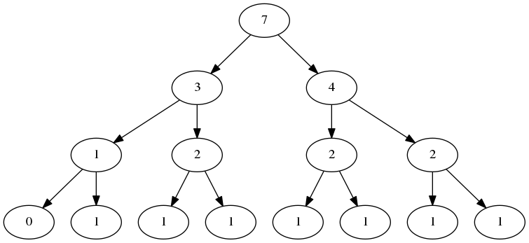

Here's a new year gift.
In the entire article, Haskell programming experience is assumed.
First comes the pile of imports, included for completeness.
{-# OPTIONS_GHC -O2 #-}
{-# LANGUAGE BangPatterns #-}
module Main (main) where
import System.IO
import Data.Array
import Data.Bits
import Data.Char
import Data.Function
import Data.List hiding (maximum)
import Control.Monad
import Data.Foldable
import Prelude hiding (maximum)
import qualified Data.ByteString.Char8 as L
import Control.Monad.Trans.State
import Control.Monad.IO.ClassGiven a list of distinct numbers \(A[1 \dots N]\), and \(m\) queries, for each query \(Q(i, j, k)\), answer the k-th number in the segment \(A[i\dots j]\) after it is sorted, i.e., the \(k\)-th smallest number in that segment. There are at most \(10^5\) numbers and \(5000\) queries, and each number does not exceed \(10^9\) by its absolute value.
For example, \(A = [1\ 5\ 2\ 6\ 3\ 7\ 4]\), and the query is \(Q(2, 5, 3)\). The segment in question is \([5\ 2\ 6\ 3]\), and the 3rd smallest is 5.
First, let's introduce the segment tree, a binary tree shaped data structure that describes a set of numbers in the range \([0 \dots U]\), where \(U\) is global. It stores the count of numbers in \(S\) within certain ranges.
It has the following operations:
Let \([i \dots j]\) be a subrange of \([0 \dots U]\). A segment tree node of a set \(S\) is defined as the following Haskell data type:
data Node = Branch Int -- Value
Node -- Left child
Node -- Right childWhere:
Note that the indices \(i\) and \(j\) are not stored. They can be computed on-the-fly when recursing. A segment tree is then just a segment tree node describing the range \([0 \dots U]\). For an example, here's the segment tree for \(A = [1\ 5\ 2\ 6\ 3\ 7\ 4]\) (The undefined nodes are not shown):

Having defined the structure and operations, let's implement them in Haskell.
In the empty set, every node has a value \(0\), so we only need a cyclic node.
sgtEmpty :: Node
sgtEmpty = Branch 0 sgtEmpty sgtEmptyWe define middle using a bit shift
middle :: Int -> Int -> Int
middle a b = (a + b) `shiftR` 1As for insertion, we recurse through the tree, finding nodes that needs to be incremented by one, and reuse the rest. Here \(n\) stands for the \(U\).
sgtInsert :: Int -> Node -> Int -> Node
sgtInsert n t x = go 0 n tThe variables \(lb\) and \(rb\) stands for "left bound" and "right bound", and is called \(i\) and\(j\) above. If \(lb = rb\), it means that we are at a leaf.
where go lb rb (Branch c _ _) | lb == rb =
Branch (c + 1) invalidNode invalidNodeOtherwise, we increment the value at the current node by one, and recurse into the child whose range contains the number \(x\)
go lb rb (Branch c l r) =
if x <= middle lb rb
then Branch (c + 1) (go lb (middle lb rb) l) r
else Branch (c + 1) l (go (middle lb rb + 1) rb r)sgtGetKth :: Int -> Int -> Node -> Int
sgtGetKth k n t = go k 0 n tIf \(i = j\), then the number must be \(i\), because that is the only number we have.
where go _ lb rb _ | lb == rb = lbOtherwise, we still let \(m = \lfloor (i + j) / 2 \rfloor\). We check to see how many numbers we have in \([i \dots m]\). If that number is larger than or equal to \(k\), it means that the \(k\)-th is in \([i \dots m]\), and otherwise it is in \([m + 1 \dots j]\). We then just recurse into the corresponding nodes. In the code below \(k\) is renamed to \(b\) to avoid name clashes.
go b lb rb (Branch _ l@(Branch sl _ _) r) =
if b <= sl
then go b lb (middle lb rb) l
else go (b - sl) (middle lb rb + 1) rb rsgtDiff :: Node -> Node -> Node
Branch x1 l1 r1 `sgtDiff` Branch x2 l2 r2 =
Branch (x1 - x2) (l1 `sgtDiff` l2) (r1 `sgtDiff` r2)sgtDiff is to pass its result to sgtGetKth, then only the nodes visited gets computed, so the overall complexity is not affected except a constant factor. Such a property is crucial in the implementation of the Chair Tree.
A brief etymology note: The Persistent Segment Tree, when used for solving variants of K-th Number problems, is commonly called "Chair Tree" (主席树) here in China, because it was promoted by someone whose name's Pinyin initials are the same as one of the former Presidents of China. However, I was unable to find more details about this. "Chair Tree" is much shorter than "Persistent Segment Tree", and is what I'll use here.
A Chair Tree is really an array of segment trees. For a list \(A[1 \dots N]\), the array \(CT[0 \dots N]\), in which \(CT[i]\) is the segment tree describing the segment \(A[1 \dots i]\), and specifically, \(A[0]\) is the empty segment tree.
The Chair Tree is described by the following data type. The field ctMaxval is the \(U\) above.
data ChairTree = ChairTree
{ ctMaxval :: Int
, ctArray :: Array Int Node
}buildChairTree :: [Int] -> ChairTree
buildChairTree ls =
ChairTree { ctMaxval = maxval
, ctArray = listArray (0, length ls)
(scanl (sgtInsert maxval)
sgtEmpty
ls)
}
where maxval = maximum lsTo answer the query \(Q(i, j, k)\), we first take the difference of \(CT[j]\) and \(CT[i-1]\), which describes \(A[i \dots j]\). Then we just get the \(k\)-th number from it.
queryChairTree :: ChairTree -> Int -> Int -> Int -> Int
queryChairTree (ChairTree maxval arr) lb rb k =
sgtGetKth k maxval ((arr ! rb) `sgtDiff` (arr ! (lb - 1)))sorted is a list of (new value, (original index, original value)), newxs is the mapped list, and mapping is the mapping back to the original numbers. I'm really sorry for the mess here.
compress :: Int -> [Int] -> (Array Int Int, [Int])
compress n xs = (mapping, newxs)
where sorted = zip [0..] (sortBy (compare `on` snd) (zip [0..] xs))
newxs = toList (array (0, (n-1))
(map (\(newix, (oldix, _)) -> (oldix, newix)) sorted)
)
mapping = array (0, (n-1)) (map (\(newix, (_, val)) -> (newix, val)) sorted)getInt :: StateT L.ByteString IO Int
getInt = do modify (L.dropWhile isSpace)
oldstr <- get
let Just (n, newstr) = L.readInt oldstr
put newstr
return n
main' :: StateT L.ByteString IO ()
main' =
do n <- getInt
m <- getInt
xs <- replicateM n getInt let (!mapping, !newxs) = compress n xs
!ct = buildChairTree xs
replicateM_ m $ do i <- getInt
j <- getInt
k <- getInt
liftIO (print (mapping ! queryChairTree ct i j k))
main :: IO ()
main = do s <- L.getContents
evalStateT main' s